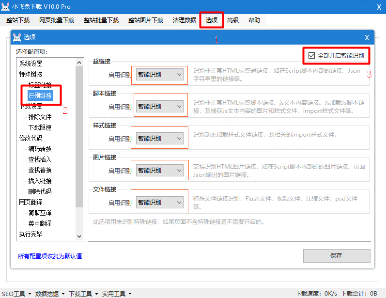

Simply put, it is captured using automatic link recognition technology
html、js、jsonInsideHyperlinks、IMG link、JS link、Link linkAnd other abnormal tag codes.
1. Click in the software menu baroption。
2. Find it in the option pop-up boxIdentify links, click open to seeHyperlinks、Script link、Style link、pictures linking、File linkWait.
3. Tick the in the upper right cornerTurn on intelligent identification allGenerally, intelligent identification can be turned on.
4. Supported version: Flying rabbit download Pro

//Picture document.writeln ("< img SRC = \" / jsimg / jsrender. Jpg \ "title = \" this is the picture rendered by JS \ "/ >")// Script document.writeln ("< script SRC = \".. /.. /.. / static / JS / renderotherjs. JS \ "> < / script >")// Style document.writeln ("< link rel = \" stylesheet \ "href = \" / CSS / jsrender. CSS \ ">")// Hyperlink document.writeln ("< a href = \".. /.. / 404. HTML \ "> hyperlink < / a >");/jsimg/jsRender.jpg../../static/js/renderOtherJs.js/css/jsrender.css../../404.htmlvar urlObj = { "url": '\/jsImg\\parks.png'};\/jsImg\\parks.pngAnd automatically escape the link to get the original address, and process the link address normally after downloading.var jsonObj = [ { "imgUrl": "/static/image/test.jpg", "js-Url": "../../static/js/renderOtherJs.js", "cssUrl":"/static/css/style.css" },]1. Picture link:/static/image/test.jpg2. Script link:../../static/js/renderOtherJs.js3. Style link:/static/css/style.css
<script>var jsonData = { "href": "javascript:Mb.jumpTo({" jumpModuleId": 422," colUrl":&# 34;../../ 404.html",&# 34; colId": 106});" };</ script>Hyperlinks identified:../../404.html
Match recognitionContent.